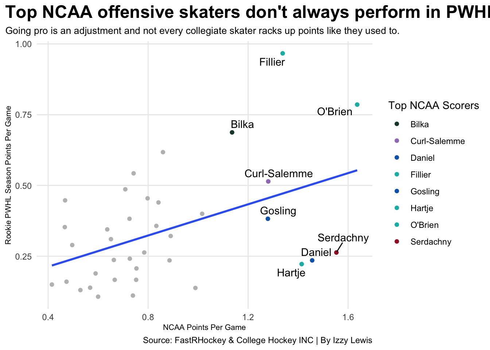
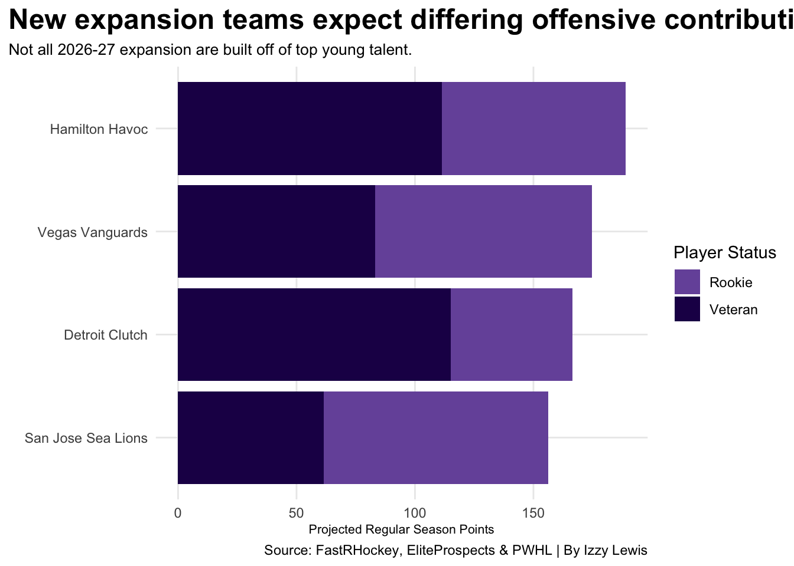
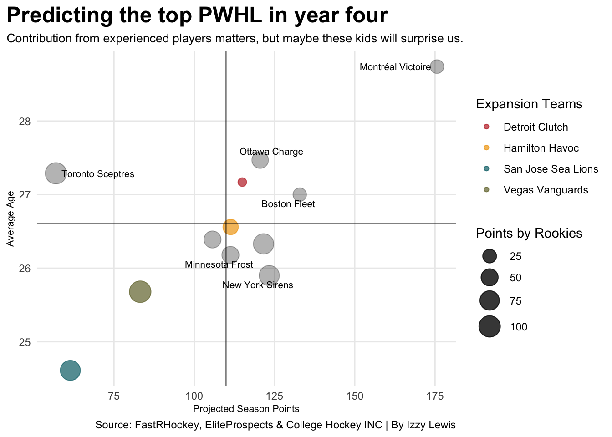

Code
library(tidyverse)
library(fastRhockey)
library(janitor)
library(ggrepel)Izzy Lewis
November 13, 2026
In its fourth season, the Professional Women’s Hockey League is still growing, in popularity, players and physical presence. This season debuts four new expansion teams: the San Jose Sea Lions, Vegas Vanguards, Detroit Clutch and Hamilton Havoc.
Since its inaugural season, the PWHL has doubled in size. What started as a league of six nameless teams — first just called by the cities they were in — has since grown to 12 across the United States and Canada.
After three seasons, no expansion team has claimed the Walter Cup, an honor shared only by two of the original six teams: the Minnesota Frost twice, and most recently, the Montréal Victoire. But of course, as talent shifts and young stars are drafted, perhaps there’s a reckoning to be had in the PWHL.
As these expansion teams build their rosters with each new draft class — bringing more players into the league — and veterans are traded to new teams, PWHL talent disperses more and more evenly.
In any sport, draft picks are evaluated by their stats in their current league, but it will never be a one-to-one translation. A top NCAA-scorer isn’t going to stand out as much amongst the ranks of the PWHL.
In the past three PWHL draft classes, a large majority of the players have come from NCAA play. By evaluating those skaters who have already had a rookie season in the PWHL, it becomes clear whether NCAA offensive output — not in goals, but in points — is a good indicator as to that player’s success in their rookie year with the pros.
draftclass26 <- read_csv("PWHL Draft Classes - 2026.csv")
draftclass25 <- read_csv("PWHL Draft Classes - 2025.csv")
draftclass24 <- read_csv("PWHL Draft Classes - 2024.csv")
pwhlbox26 <- load_pwhl_player_box(2026) |> clean_names()
cleanncaaskaters26 <- draftclass26 |> separate(`Previous Team (League)`, into=c("previous_team", "organization"), sep="\\(") |>
mutate(organization=gsub(")","", organization))|>
filter(organization == "NCAA") |>
filter(Position != "G") |> #filtering out goalies, only evaluating skaters
separate(Team, into=c("team", "via_team"), sep="\\(") |> #getting rid of "(via Detroit)" and its variations from team column
separate(Player, into=c("first_name", "last_name"), sep=" ")
#easy peasy rinse and repeat with '25 draft class, the data looks very similar
cleanncaaskaters25 <- draftclass25 |> separate(`Previous Team (League)`, into=c("previous_team", "organization"), sep="\\(") |>
mutate(organization=gsub(")","", organization)) |>
filter(organization == "NCAA") |>
filter(Position != "G") |> #filtering out goalies, only evaluating skaters
separate(Team, into=c("team", "via_team"), sep="\\(") |> #getting rid of "(via Detroit)" and its variations from team column
mutate(
team=gsub("PWHL Seattle", "Seattle Torrent", team),
team=gsub("PWHL Vancouver", "Vancouver Goldeneyes", team),
) |> #changing '25 expansion teams to team name so they match across my draft classes
separate(Player, into=c("first_name", "last_name"), sep=" ") |>
mutate(last_name=gsub("Van", "Van Wieren", last_name)) |>
mutate(last_name=gsub("Gosling", "Nicole Gosling", last_name))
#'24 draft class looks different from other data, so clean up looks a little different
cleanncaaskaters24 <- draftclass24 |> separate(`PREVIOUS TEAM (LEAGUE)`, into=c("previous_team", "organization"), sep="\\(") |>
mutate(organization=gsub(")","", organization)) |>
separate(`Round. Pick. (Team)`, into=c("round_pick", "team"), sep="\\(") |>
mutate(team=gsub(")", "", team)) |>
separate(team, into=c("team", "via_team"), sep=" -") |>
mutate(
team=gsub("NY", "New York Sirens", team),
team=gsub("OTT", "Ottawa Charge", team),
team=gsub("MIN", "Minnesota Frost", team),
team=gsub("BOS", "Boston Fleet", team),
team=gsub("MTL", "Montréal Victoire", team),
team=gsub("TOR", "Toronto Sceptres", team)
) |>
rename (Player=NAME, Position=POSITION) |>
filter(organization == "NCAA") |>
separate(Player, into=c("first_name", "last_name"), sep=" ") |>
mutate(
last_name=gsub("Curl", "Curl-Salemme", last_name)
)
ncaa2122 <- read_csv("NCAAWomensScoringLeadersfromCollegeHockeyINC - 2021-22.csv")
ncaa2223 <- read_csv("NCAAWomensScoringLeadersfromCollegeHockeyINC - 2022-23.csv")
ncaa2324 <- read_csv("NCAAWomensScoringLeadersfromCollegeHockeyINC - 2023-24.csv")
ncaa2425 <- read_csv("NCAAWomensScoringLeadersfromCollegeHockeyINC - 2024-25.csv")
ncaa2526 <- read_csv("NCAAWomensScoringLeadersfromCollegeHockeyINC - 2025-26.csv")
cleanncaa2122 <- ncaa2122 |>
rename(Player = Name) |>
mutate(season = "2022")
cleanncaa2223 <- ncaa2223 |>
rename(Player = Name) |>
mutate(season = "2023")
cleanncaa2324 <- ncaa2324 |>
rename(Player = Name) |>
mutate(season = "2024")
cleanncaa2425 <- ncaa2425 |>
rename(Player = Name) |>
mutate(season = "2025")
cleanncaa2526 <- ncaa2526 |>
rename(Player = Name) |>
mutate(season = "2026")
cleanncaa <- bind_rows(cleanncaa2526, cleanncaa2425, cleanncaa2324, cleanncaa2223, cleanncaa2122)
pwhlbox24 <- load_pwhl_player_box(2024)
pwhlbox25 <- load_pwhl_player_box(2025)
rookies26 <- c("Kaltounková",
"Winn",
"O'Brien",
"Nicole Gosling",
"Guilday",
"Cooper",
"Buglioni",
"Cherkowski",
"Huber",
"Gentry",
"Mlynkova",
"Hustler",
"Zanon",
"Webster",
"Mobley",
"Jobst-Smith",
"Irving",
"Wozniewicz",
"Segedi",
"Van Wieren",
"Delianedis",
"Ross",
"Brengman",
"Wheeler",
"Hemp",
"Rinker",
"Habisch",
"Brooks",
"Bargman",
"Newhook",
"Labad",
"Upson",
"Samoskevich",
"Lobdell",
"Baskin",
"Giaquinto",
"Becker")#'25 draft class
pwhlpts_gm26 <- pwhlbox26 |>
filter(position != "G") |>
filter(last_name %in% rookies26) |>
group_by(first_name, last_name) |>
summarize(
total_points = sum(points),
total_games = n()
) |>
mutate(
pwhl_pts_gm = total_points/total_games
) |>
filter(pwhl_pts_gm > .1)
rookies25 <- c("Fillier", "Serdachny", "Bilka", "Barnes",
"Gosling",
"Curl-Salemme",
"Gardiner",
"Carter",
"Philips",
"Hymlárová",
"Simpson",
"Daniel",
"Rosenthal",
"Markowski",
"McQuigge",
"Bard",
"Greig",
"Bernard",
"Hartje",
"McMahon",
"Petrie",
"Osborne",
"Wilgren",
"Batherson",
"Wethington",
"Knoll",
"Hartmetz",
"Kirk") #'24 draft class
pwhlpts_gm25 <- pwhlbox25 |>
filter(position != "G") |>
filter(last_name %in% rookies25) |>
group_by(first_name, last_name) |>
summarize(
total_points = sum(points),
total_games = n()
) |>
mutate(
pwhl_pts_gm = total_points/total_games
) |>
filter(pwhl_pts_gm > .1)
allpwhlpts_gm <- bind_rows(pwhlpts_gm25, pwhlpts_gm26)
#ncaa avg pts per game
rookiesncaa_avg_scoring <- cleanncaa |>
separate(Player, into=c("first_name", "last_name"), sep=" ") |>
group_by(first_name, last_name) |>
summarize(
total_pt_gm = sum(`Pt/Gm`),
total_seasons = n()
) |>
mutate(
mean_ncaapt_gm = total_pt_gm/total_seasons,
last_name=gsub("Curl", "Curl-Salemme", last_name)
) |>
filter(mean_ncaapt_gm > .1)
rookiepwhl_scatterplot <- allpwhlpts_gm |>
inner_join(rookiesncaa_avg_scoring)
topncaascorers <- rookiepwhl_scatterplot |> filter(mean_ncaapt_gm >= 1.0882250 & pwhl_pts_gm > 0)
#scatterplot
ggplot() +
geom_point(data=rookiepwhl_scatterplot, aes(x=mean_ncaapt_gm, y=pwhl_pts_gm), color="grey") +
geom_point(data=topncaascorers, aes(x=mean_ncaapt_gm, y=pwhl_pts_gm, color=last_name)) +
scale_color_manual(name="Top NCAA Scorers", values=c(
"#154734", #Bilka on Boston Fleet
"#A07DC5", #Curl on Minnesota Frost
"#0067B9", #Daniel on Toronto Sceptres
"#00b9b3", #Fillier on NY Sirens
"#0067B9", #Julia Gosling on Toronto Sceptres
"#00b9b3", #Hartje on NY Sirens
"#00b9b3", #O'Brien on NY Sirens
"#a51b2f", #Serdachny on Ottawa Charge
"#0067B9" #Zanon on Toronto Sceptres
)) +
geom_text_repel(
data=topncaascorers,
aes(x=mean_ncaapt_gm, y=pwhl_pts_gm, label=last_name)
) +
geom_smooth(data=rookiepwhl_scatterplot, aes(x=mean_ncaapt_gm, y=pwhl_pts_gm), method="lm", se=FALSE, alpha=.3) +
labs(
x="NCAA Points Per Game",
y="Rookie PWHL Season Points Per Game",
title="Top NCAA offensive skaters don't always perform in PWHL ",
subtitle="Going pro is an adjustment and not every collegiate skater racks up points like they used to.",
caption="Source: FastRHockey & College Hockey INC | By Izzy Lewis"
) +
theme_minimal() +
theme(
plot.title = element_text(size = 18, face = "bold"),
axis.title = element_text(size = 8),
plot.subtitle = element_text(size=10),
panel.grid.minor = element_blank(),
plot.title.position = "plot"
) 
The top players in the NCAA don’t always turn into top PWHL talent, but maybe those rookies were on a stacked roster, full of veteran players who got more ice time than they did.
Another way to build an expansion team roster? Transfers from established PWHL teams.
Looking at returning skaters’ points on the last regular season, versus a translation rate calculated by the average percentage change (n=0.6085942) from NCAA to PWHL rookie season points per game average can help predict what the draft class may contribute to the new expansion teams.
hiderookiepwhl_scatterplot <- rookiepwhl_scatterplot |>
summarize(
total_ncaapts = sum(mean_ncaapt_gm),
total_pwhlpts = sum(pwhl_pts_gm),
pct_change = ((total_pwhlpts-total_ncaapts)/total_ncaapts)*100
) |>
mutate( translation = mean(pct_change)) #to calculate a percent change on average for those who were draft picks in '24 and '25 and played a rookie season in the PWHL = -60.85942
#cleaning up expansion team rosters
sj <- read_csv("PWHLExpansionTeamRostersfromEliteProspects - SanJose.csv")
lv <- read_csv("PWHLExpansionTeamRostersfromEliteProspects - LasVegas.csv")
ham <- read_csv("PWHLExpansionTeamRostersfromEliteProspects - Hamilton.csv")
det <- read_csv("PWHLExpansionTeamRostersfromEliteProspects - Detroit.csv")
sjroster <- sj |> separate(Player, into=c("Player", "Position"), sep="\\(") |>
mutate(Position=gsub(")","", Position)) |>
filter(Position != "G") |> #filter out goaltenders
mutate(Team = "PWHL San Jose")
lvroster <- lv |> separate(Player, into=c("Player", "Position"), sep="\\(") |>
mutate(Position=gsub(")","", Position)) |>
filter(Position != "G") |>
mutate(Team = "PWHL Las Vegas")
hamroster <- ham |> separate(Player, into=c("Player", "Position"), sep="\\(") |>
mutate(Position=gsub(")","", Position)) |>
filter(Position != "G") |>
mutate(Team = "PWHL Hamilton")
detroster <- det |> separate(Player, into=c("Player", "Position"), sep="\\(") |>
mutate(Position=gsub(")","", Position)) |>
filter(Position != "G") |>
mutate(Team = "PWHL Detroit")
expansionteams <- bind_rows(detroster, hamroster, lvroster, sjroster) |>
separate(Player, into=c("first_name", "last_name"), sep=" ")
pwhlprepped <- expansionteams |>
left_join(pwhlbox26) |>
filter(Position != "G") |>
group_by(first_name, last_name, Team) |>
summarize(
total_pwhlpoints = sum(points),
total_pwhlgames = n(),
) |>
filter(total_pwhlgames > 5) |>
mutate(
projected_pts_gm = total_pwhlpoints/total_pwhlgames, #for veteran players, simply using what they scored last year
player_type = "PWHL Veteran"
) |>
clean_names()
bettercleanncaa2526 <- cleanncaa2526 |>
filter(Pos. != "G") |>
separate(Player, into=c("first_name", "last_name"), sep=" ")
ncaaprepped <- cleanncaaskaters26 |>
left_join(bettercleanncaa2526) |>
select(first_name, last_name, team, `Pt/Gm`) |>
mutate(
projected_pts_gm = `Pt/Gm`*.6085942, #multiplied by percent change calculated earlier
player_type = "PWHL Rookie"
)
stackedbarchart <- bind_rows(ncaaprepped, pwhlprepped) |>
filter(team == "PWHL Las Vegas" | team == "PWHL San Jose" | team == "PWHL Hamilton" | team == "PWHL Detroit") |>
filter(projected_pts_gm != "NA") |>
group_by(team, player_type) |>
summarize(
total_projected_pts_gm = sum(projected_pts_gm),
projected_30g_pts = total_projected_pts_gm*30 #multiply for 30 to predict how many points in the 30-game regular season
) |>
mutate(
team=gsub("PWHL Las Vegas", "Vegas Vanguards", team),
team=gsub("PWHL San Jose", "San Jose Sea Lions", team),
team=gsub("PWHL Detroit", "Detroit Clutch", team),
team=gsub("PWHL Hamilton", "Hamilton Havoc", team) #adding in the newly announced expansion team names!
)
ggplot() +
geom_bar(data=stackedbarchart, aes(x=reorder(team, projected_30g_pts), weight=projected_30g_pts, fill=player_type)) +
coord_flip() +
scale_fill_manual(
name = "Player Status",
values = c("#7756A9", "#200256"),
labels = c("Rookie", "Veteran")
) +
labs(
x="",
y="Projected Regular Season Points",
title="New expansion teams expect differing offensive contribution",
subtitle="Not all 2026-27 expansion are built off of top young talent.",
caption="Source: FastRHockey, EliteProspects & PWHL | By Izzy Lewis"
) +
theme_minimal() +
theme(
plot.title = element_text(size = 18, face = "bold"),
axis.title = element_text(size = 8),
plot.subtitle = element_text(size=10),
panel.grid.minor = element_blank(),
plot.title.position = "plot"
) 
San Jose is lowest on scoring, but looks like it will be relying heavily on its rookies. Meanwhile Hamilton, predicted to have the most points, will rely heavily on veterans. It makes sense that a team with more-experienced players would offensively outdo an inexperienced one.
It gets interesting when the Vanguards, who are fairly balanced between expected veteran and rookie contribution, are predicted to out perform the Clutch, who will be relying more heavily on veterans than any other new expansion team.
In a league still in its infancy, fresh talent can do a lot of the heavy lifting because everyone is in their early years in the league. The most veteran players only have three PWHL years under their belts.
Age may be a more accurate gauge on experience levels, indicating how long these women have been playing hockey, even if a dedicated North American women’s professional league has been in limbo. These skaters still could have been playing on national teams and at the Olympics, so the years do matter.
By evaluating the average projected points based on veterans’ last regular season totals, versus the average player age on each team’s roster, a picture of what teams could dominate this season starts to become clear.
teamsbyavg_age <- read_csv("PWHLTeams by AverageAgeHeightWeightfromEliteProspects - 2026-27.csv") |>
clean_names() |>
select(team, avg_age)
bubbleveterans <- expansionteams |>
left_join(pwhlbox26) |>
filter(Position != "G") |>
group_by(first_name, last_name, Team, A) |>
summarize(
total_pwhlpoints = sum(points),
total_pwhlgames = n(),
) |>
filter(total_pwhlgames > 5) |>
mutate(
projected_pts_gm = total_pwhlpoints/total_pwhlgames, #for veteran players, simply using what they scored last year
draft_potential = 0 #only applies to draft class not veteran players
) |>
clean_names()
nccapreppedbubble <- cleanncaaskaters26 |>
left_join(bettercleanncaa2526) |>
mutate(
projected_pts_gm = 0, #not applying to draft class that hasn't played in pro games
draft_potential = (`Pt/Gm`*.6085942)*30 #for 30 regular season games
) |>
select(first_name, last_name, draft_potential, projected_pts_gm)
bubblerookies <- expansionteams |>
left_join(nccapreppedbubble) |>
clean_names()
bubble <- bind_rows(bubblerookies, bubbleveterans) |>
filter(draft_potential >= 0 & projected_pts_gm >= 0) |>
group_by(team) |>
summarize(
total_projected_pts_gm = sum(projected_pts_gm),
total_draft_potential = sum(as.numeric(draft_potential)),
projected_30g_pts = total_projected_pts_gm*30 #multiply for 30 to predict how many points in the 30-game regular season
) |>
mutate(
team=gsub("PWHL Las Vegas", "Vegas Vanguards", team),
team=gsub("PWHL San Jose", "San Jose Sea Lions", team),
team=gsub("PWHL Detroit", "Detroit Clutch", team),
team=gsub("PWHL Hamilton", "Hamilton Havoc", team) #adding in the newly announced expansion team names
) |>
left_join(teamsbyavg_age)
pwhl2026teams <- c("Boston Fleet", "Minnesota Frost", "Montréal Victoire", "New York Sirens", "Ottawa Charge", "Seattle Torrent", "Toronto Sceptres", "Vancouver Goldeneyes")
originalsix <- c("Boston Fleet", "Minnesota Frost", "Montréal Victoire", "New York Sirens", "Ottawa Charge", "Toronto Sceptres")
pwhlrosters2027 <- read_csv("PWHLfromEliteProspects - AllTeams.csv") |>
separate(Player, into=c("player", "position"), sep="\\(") |>
separate(player, into=c("first_name", "last_name"), sep=" ") |>
rename(team = "...2") |>
filter(team %in% pwhl2026teams) |>
select(first_name, last_name, team)
veteransonnonexpansionteams <- pwhlrosters2027 |>
left_join(pwhlbox26) |>
group_by(first_name, last_name, team) |>
summarize(
total_pwhlpoints = sum(points),
total_pwhlgames = n(),
) |>
filter(is.na(total_pwhlpoints) == FALSE) |>
filter(total_pwhlgames > 5) |>
mutate(
pts_gm = total_pwhlpoints/total_pwhlgames, #for veteran players, simply using what they scored last year
draft_potential = 0 #only applies to draft class not veteran players
) |>
clean_names()
pwhlnonexpansion2027 <- pwhlrosters2027 |>
left_join(veteransonnonexpansionteams) |>
filter(team != "Hamilton Havoc" & team != "Detroit Clutch" & team != "San Jose Sea Lions" & team != "Vegas Vanguards") |>
mutate(
projected_30g_pts = pts_gm*30
) |>
clean_names() |>
group_by(first_name, last_name, team) |>
summarize(
projected_30g_pts = sum(projected_30g_pts)
) |>
mutate(
draft_potential = 0
) |>
filter(is.na(projected_30g_pts) == FALSE) |>
select(team, projected_30g_pts, first_name, last_name, draft_potential)
nonexpansionteams_draftbubble <- cleanncaaskaters26 |>
left_join(bettercleanncaa2526) |>
mutate(
draft_potential = (`Pt/Gm`*.6085942)*30, #for 30 regular season games
projected_30g_pts = 0
) |>
select(first_name, last_name, draft_potential, team, projected_30g_pts) |>
filter(team %in% pwhl2026teams) |>
filter(draft_potential > 0)
pwhl2026_bubble <- bind_rows(nonexpansionteams_draftbubble, pwhlnonexpansion2027) |>
group_by(team) |>
summarize(
projected_30g_pts = sum(projected_30g_pts),
total_draft_potential = sum(draft_potential)
) |>
left_join(teamsbyavg_age)
hide_xy_intercepts <- bind_rows(pwhl2026_bubble, bubble) |>
summarize(
ptline = mean(projected_30g_pts),
ageline = mean(avg_age)
) #caclulating x & y intercepts of means
originalsixbubble <- pwhl2026_bubble |> filter(team %in% originalsix)
ggplot() +
geom_point(
data=bubble,
aes(x=projected_30g_pts, y=avg_age, size=total_draft_potential, color=team),
alpha = .7
) +
scale_color_manual(
name = "Expansion Teams",
values = c("#C02B2D", #detroit
"#F1A40E", #hamilton
"#006D75", #san jose
"#717237" #vegas
)
) +
geom_point(
data=pwhl2026_bubble,
aes(x=projected_30g_pts, y=avg_age, size=total_draft_potential),
alpha = .3) +
scale_size(range = c(3, 8), name="Points by Rookies") +
geom_vline(xintercept = 109.8979, alpha=.5) +
geom_hline(yintercept = 26.61, alpha=.5) +
geom_text_repel(
data=originalsixbubble,
aes(x=projected_30g_pts, y=avg_age, label=team),
size=2.75
) +
labs(
x="Projected Season Points",
y="Average Age",
title="Predicting the top PWHL in year four",
subtitle="Contribution from experienced players matters, but maybe these kids will surprise us.",
caption="Source: FastRHockey, EliteProspects & College Hockey INC | By Izzy Lewis"
) +
theme_minimal() +
theme(
plot.title = element_text(size = 18, face = "bold"),
axis.title = element_text(size = 8),
plot.subtitle = element_text(size=10),
panel.grid.minor = element_blank(),
plot.title.position = "plot"
) 
Total draft potential, calculated using the earlier percentage change translation rate, weights each team on its possible output from rookies who played in the NCAA. The lines show the average age and average projected season points across the 12 teams.
San Jose and Vegas trend young and low on offensive output, relying heavily on their rookies, so while they may not see success this season, they have great potential from the draft class and, as they develop players, they could start to have success.
Hamilton falls in the middle of the pack, fairly average, and may see success in securing one of those eight coveted playoff spots. Detroit is older than and outperforming the other new expansions, clearly relying on those veterans. In this model, without the rookie’s projected points contributing to the projected points total, it completely shifts in the ranking. However, the Clutch have some of the lowest potential from its rookies league-wide.
It’s also easy to see why Montréal had a crazy regular season that it clearly carried into playoffs, and it’s eventually hoisting the Walter Cup. The Victoire have the oldest, most experienced roster and rack up those points like no other. It will continue to rely on its veterans next season.
Out of the original six teams — each labeled on the chart — Toronto is the only one lacking. It’s older, more experienced, but also has one of the bigger expected points by rookies. After a rough season, getting the younger women to contribute offensively may boost them up the ranks.